What happened when we replaced the old way of computing the nonlinear term with Hari's off-mesh quadrature rules, on our full-scale Burgers models. Every point is read straight from the run files.
Red (old tensor) falls from 10.5% to 3.9% only because the mesh gets finer. Blue (new off-mesh rule) is flat at 2.83% on every mesh. Grey is the best full-solver setting on the same mesh.
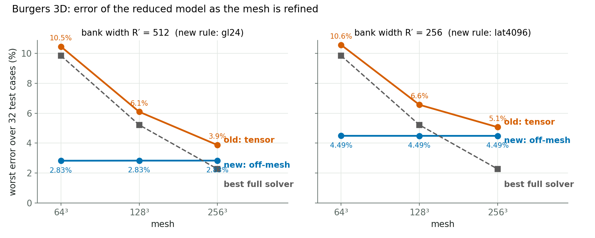
How to read it: Lower is better. Each point is the worst error over 32 held-out test cases, measured against a refined (first-order) reference. Caveat: at 256³ the full solver is more accurate, and the reference itself is first-order, which the next experiments will fix.
Each line shows how the error of computing the nonlinear term falls as you add points. Yellow (lattice) sits below blue (Gauss) everywhere. Points above the dashed line fail the project's acceptance bar.
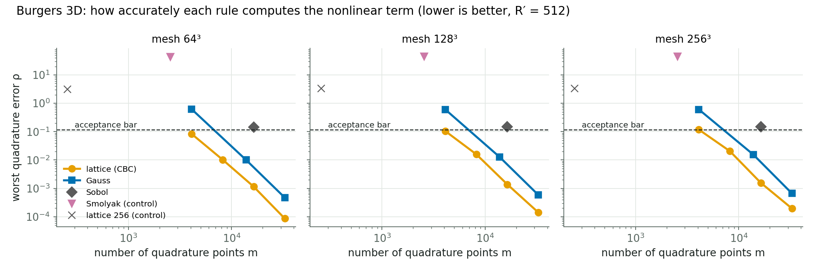
How to read it: Log–log axes. Measured on validation states; one random lattice shift.
At R′ = 512 the new rule (blue) costs 34.1 → 76.7 ms against 47.9 → 90.1 ms for the tensor (red). Grey is the full solver at the same accuracy on the same mesh: far cheaper at 64³ (3.6 ms), far more expensive at 256³ (198.7 ms).
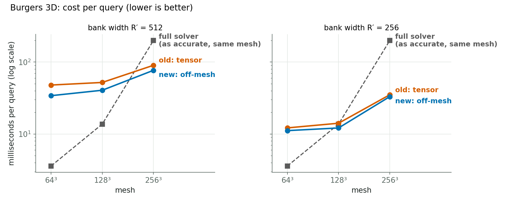
How to read it: Log scale. Both reduced models still grow with the mesh, because reading the input and writing the output touch every mesh node.
The old tensor stores a table that grows with the square of the bank width; the new rule stores only the bank evaluated at its points.
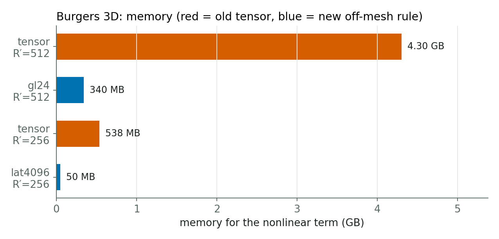
Accurate setting: new Gauss 96² stays at 2.64% while the dense mesh solve goes 5.58% → 1.62%. Fast setting: new Fibonacci 1597 stays at 4.36%.
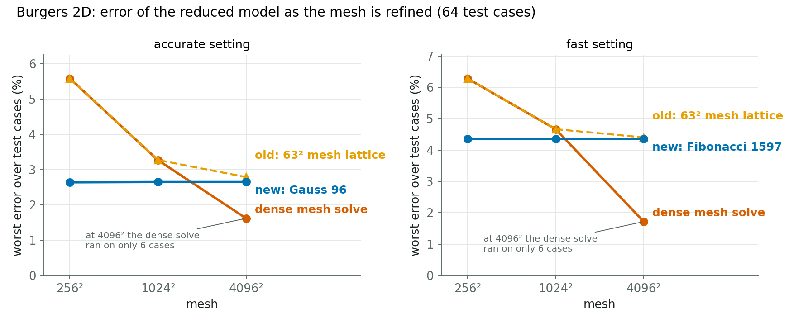
How to read it: Worst error over the 64 test cases against a space-and-time refined reference. At 4096² the dense solve was run on only 6 cases, so its last point is not directly comparable.
Every rule is a flat line: cost depends on the number of points, not on the mesh. The old 63² lattice (red, dashed) is shown for comparison.
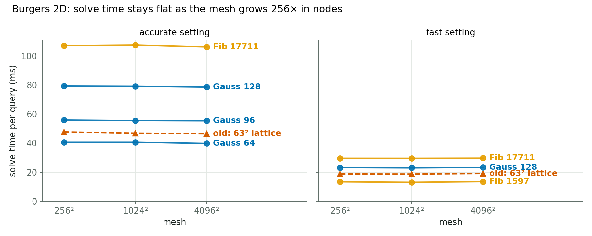
How to read it: Measured on one H200 in the same job. The full query (including reading input and writing output on the mesh) still grows with the mesh.
Our 2D bank needs thousands of points before Gauss or Fibonacci pass the bar, far more than Hari's smaller model did.
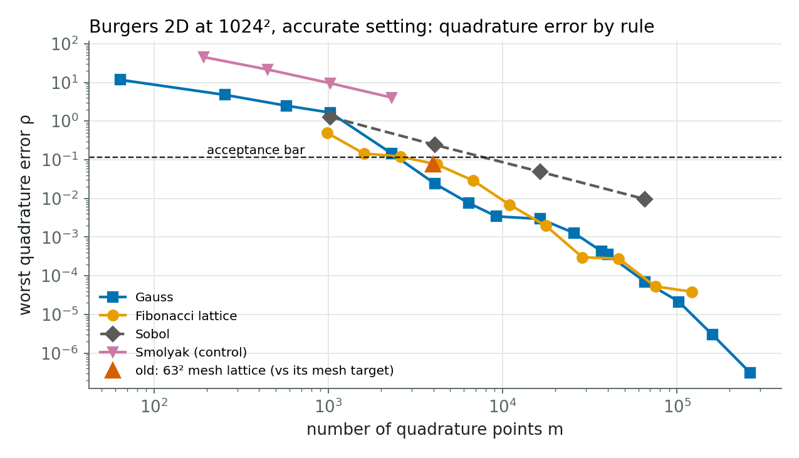
How to read it: Measured on the states reached on the 1024² test runs, accurate setting. The red triangle is the old mesh lattice measured against its own (mesh) target, so it is not directly comparable.
Pink is a control: every mesh node, but the bank's exact derivative instead of the upwind stencil. In 3D it lands on top of the off-mesh rule (yellow/orange) and the converged rollout. Blue/red, the old stencil-based methods, carry the mesh's error. So the exact gradient gives the accuracy, and the classical rule gives the same answer with thousands of points instead of every mesh node.
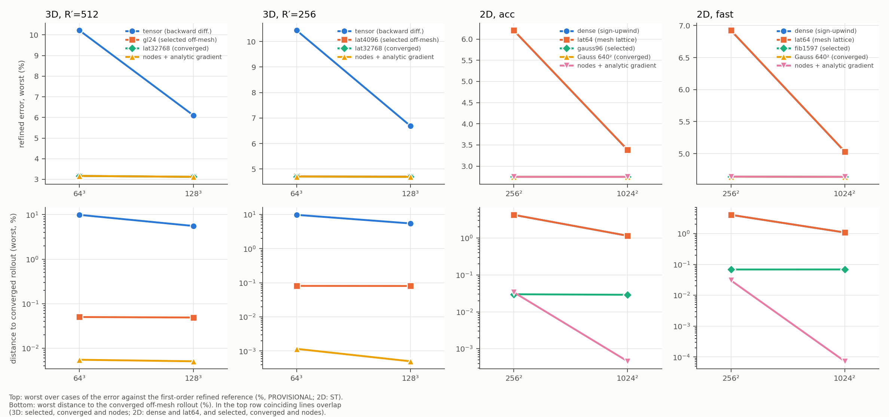
How to read it: Top row: worst error vs the refined reference (provisional: the reference is first-order). Bottom row: distance to the converged off-mesh rollout. Preliminary (lane jcp-mechanism, Codex-audited). In 2D the pre-registered label could not be applied, because the gap was below its 1 % threshold, but the distances point the same way.
The difference between the mesh's own sum and the true integral falls with slope 1 for the first-order upwind stencil and slope 2 for a second-order central stencil. With the exact gradient (green) it drops to the noise floor.
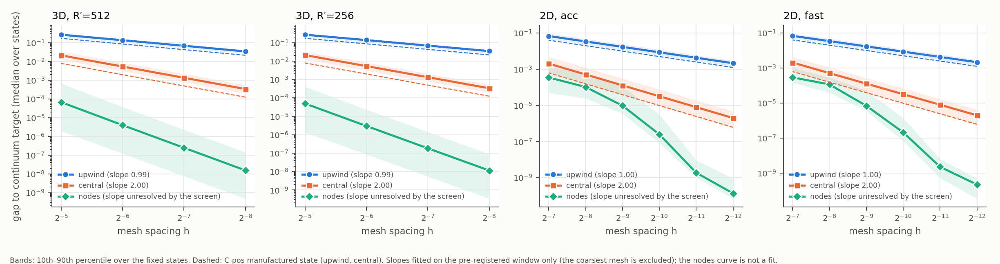
How to read it: Measured on fixed saved states; slopes are fitted over a pre-registered window. Dashed lines: a manufactured test state run through the same code (control).
Each line is one time-stepping scheme; points along a line are different step sizes. The black circle is the method we deployed (backward Euler). Moving to Crank–Nicolson or BDF2 at the same cost drops the median error about 9× (0.91 % to 0.10 %); at twice the step it is still more accurate and runs about 1.75× faster.
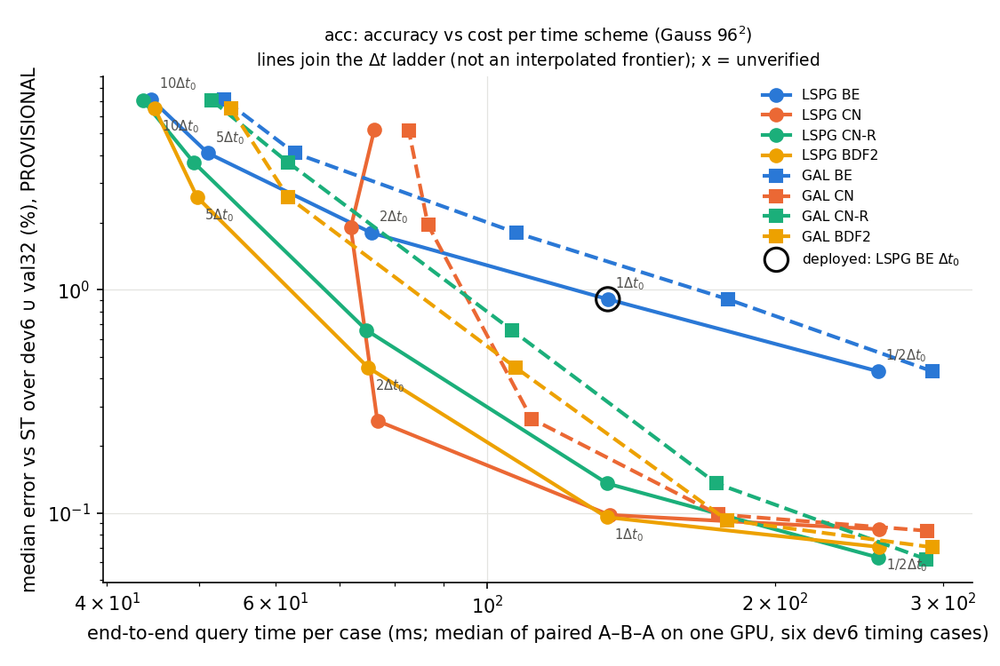
How to read it: 2D accurate setting (width 384), 38 validation cases, 1024². Errors against the space+time reference (provisional: the references are first-order). Lane jcp-time2, Codex-audited.
Right panel: time error vs step size. Backward Euler (blue) falls with slope 1, while the second-order schemes fall with slope 2 and sit far below it. Left panel: worst error over all cases; second order stays low up to about twice the original step.
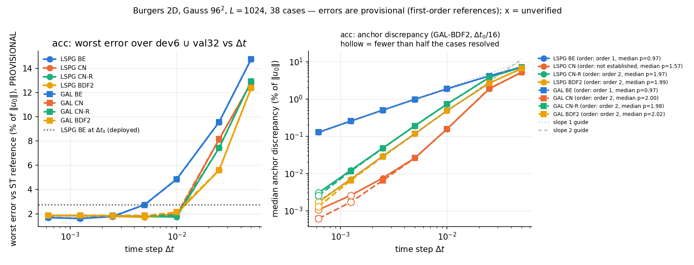
How to read it: The least-squares form with plain Crank–Nicolson does not reach a clean order 2 (its test space depends on the step); the BDF2 and modified-CN variants do.
Squares are the full solver, circles the reduced model, each line one time scheme. Second-order stepping also makes the full solver faster and more accurate, so comparing against the old backward-Euler full solver would overstate our gain. Against the fair second-order full solver, the matched speed-up rises from 1.76× (both deployed as before) to 3.65× (reduced model with Crank–Nicolson at twice the step).
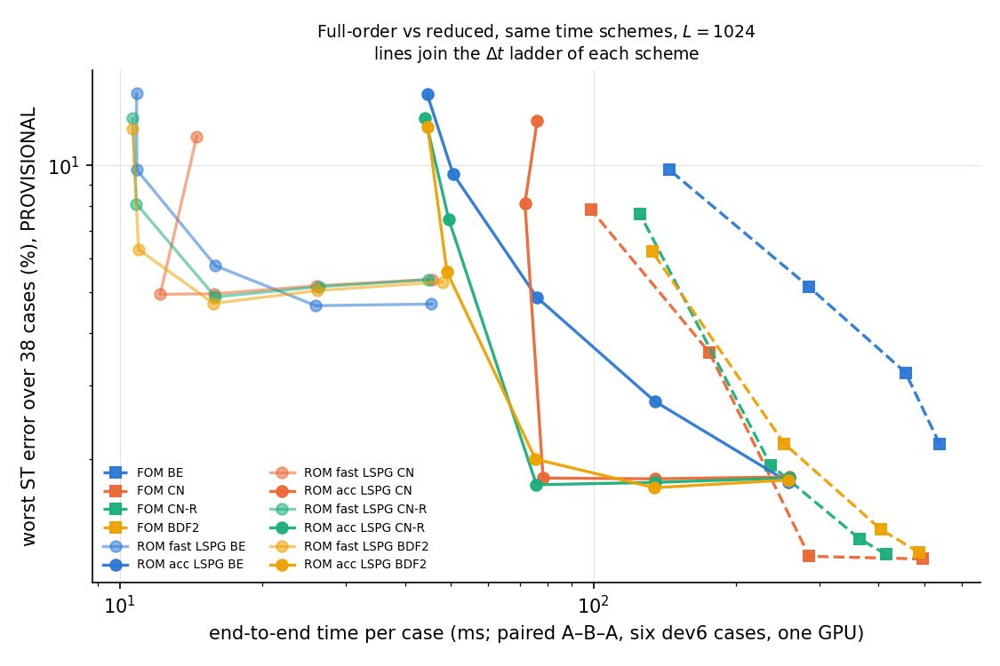
How to read it: Both models timed in the same job on the same GPU (paired A–B–A, six cases). Matched means: the cheapest full-solver setting with equal or better worst-case error, among the settings run.